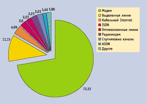
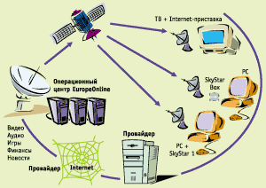
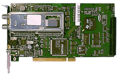
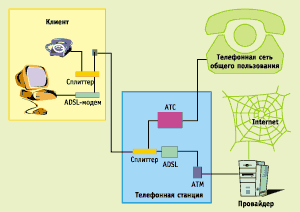
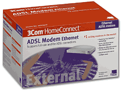

Способы подключения к интернету
Сергей Маленкович
Только у домашних пользователей с минимальными требованиями к доступу в
Сеть не возникает вопрос о том, каким образом подсоединяться к Internet. Все
остальные должны решить для себя проблему выбора между модемным подключением,
различными способами создания выделенных каналов, а также беспроводными методами
доступа. Данная статья поможет нашим читателям разобраться, в каких ситуациях
применим тот или иной способ подключения к Internet и каковы его
особенности.
Подключение по коммутируемой телефонной линии с помощью модема
Это наиболее распространенный среди домашних пользователей и небольших фирм
способ, применяется он иногда и крупными организациями, если их потребности в
сетевых коммуникациях невелики. С точки зрения организации подключения, такой
способ наиболее прост: пользователю требуется лишь телефонная линия и недорогой
модем. Доступ в Internet предоставляется множеством специализированных фирм (в
Москве и Санкт-Петербурге, например, их десятки), а стоят их услуги совсем
недорого. Для подключения рекомендуется выполнить следующие шаги:
- получить информацию о типе и качестве своей АТС. Для этого желательно
пообщаться со знакомыми, которые имеют номер на той же станции и давно
используют свою линию для модемной связи. Можно также позвонить на АТС.
Наилучшими являются цифровые АТС, несколько хуже более старые модели -
координатные усовершенствованные и просто координатные. Почти не встречаются
самые старые шаговые АТС, качество связи через которые очень низкое;
- в зависимости от типа АТС и имеющихся финансовых ресурсов, принять решение
о покупке модема. Чем хуже линия, тем выше требования к модему. Поэтому
дешевые модели за $30-50 (здесь и далее указаны цены на
момент написания статьи) покупать можно только тогда, когда есть
уверенность в качестве телефонной линии или же совсем нет свободных денег;
- оценить свои потребности - как много времени вы собираетесь проводить в
Сети, в какое время суток и в какие дни. Исходя из этого, нужно выбрать класс
тарифных планов, которые будут наиболее удобны. Тем, кому нужна только
электронная почта или еженедельный двухчасовой тур по избранным Web-сайтам,
можно порекомендовать повременную оплату доступа в Internet. Любителям же ночи
напролет играть по Сети или загружать себе на компьютер музыку больше подойдет
неограниченный ночной доступ или абонемент на 50-100 ч доступа;
- выбрать провайдера, который предлагает наиболее выгодные условия по
избранному тарифному плану;
- если провайдер дает такую возможность, провести сеанс тестового доступа.
Это позволит самостоятельно оценить скорость и надежность связи, легкость
дозвона до провайдера;
- приехать в один из офисов провайдера, заключить договор, оплатить доступ и
получить реквизиты для входа в Internet.

По результатам опросов, более 70% аудитории
используют модем для доступа в Сеть.
За исключением вопросов выбора, которые встают всегда, эта процедура не
слишком сложна. В упрощенном варианте, приобретая одновременно модем и доступ в
Сеть, ее можно пройти за несколько часов, особенно с учетом того, что крупные
компьютерные фирмы зачастую являются дилерами одного или нескольких
Internet-провайдеров.
В техническом плане наиболее сложным аспектом здесь является установка
модема. Эта "сложная операция" занимает у опытного специалиста от двух до
пятнадцати минут. Стоимость модема совсем невелика - наиболее дешевые модели
стоят менее $40, самые лучше экземпляры редко бывают дороже $250. Поскольку в
качестве канала связи используется обычная телефонная линия, то никаких операций
по установлению проводного соединения не требуется.
Другой аспект стоимости соединения - ежемесячные затраты - целиком зависит от
того, как используется Cеть. Если вы ежедневно пишете и читаете по несколько
писем, бегло просматриваете новости, да изредка закачиваете какую-нибудь
программку, то ежемесячные расходы, скорее всего, будут находиться на уровне
$10-20. Неограниченный доступ в Сеть не имеет установившейся цены, но, например,
в Москве хороший "unlimited" можно без проблем приобрести за $45-60 в месяц.
Все перечисленное: простота подключения и эксплуатации, дешевизна и
доступность - делает модемный доступ крайне привлекательным. Именно поэтому его
используют более 70% домашних пользователей. Но для решения более серьезных
задач, нежели вышеописанные, связь по модему зачастую оказывается неприемлемой.
Основные недостатки - это низкая скорость связи и невысокая надежность. В самом
лучшем случае с помощью модема можно загружать информацию со скоростью около 7
Кбайт/с, а отправлять ее еще медленнее - 4 Кбайт/с. И эти показатели являются
наилучшими! Кроме того, помехи на линии могут в любой момент привести к разрыву
соединения, на восстановление которого потребуется около минуты. Если же
модемный пул провайдера перегружен, придется повторять набор номера десятки раз,
и тогда связь восстановится гораздо позже. Ну и наконец, модем занимает
телефонную линию, и дозвониться вам во время работы в Сети совершенно
невозможно. Хорошо еще, если есть пейджер, мобильный телефон или вторая
телефонная линия, но у многих просто нет альтернативных средств коммуникации. В
этом случае, находясь в Internet, вы просто отрезаны от реального мира.
Подключение к "домашней сети" (подключение домами)
Если в вашем микрорайоне набралась некая критическая масса пользователей,
желающих подключиться к Internet, причем среди них есть технически грамотные и
инициативные люди, то рано или поздно они организуют локальную сеть, которая
будет подключена к Internet с помощью выделенного канала. В этом случае, одним
из наиболее доступных и дешевых способов альтернативного подключения к Internet
будет присоединение вашего компьютера к этой сети. Для этого в квартиру проведут
кабель типа "витая пара" или коаксиальный и присоединят его к сетевой карте,
которая устанавливается в компьютер. Длительность выполнения этого этапа работ
зависит от конкретных условий: есть ли уже абоненты сети в вашем доме, каким
образом нужно прокладывать кабель, и т. п. Если все в порядке, то за 3-5 дней
вас присоединят к сети. При этом можно быстро и бесплатно обмениваться данными,
общаться и играть с другими пользователями той же локальной сети. Доступ в
Internet будет платным, поскольку администрации "домашней сети" нужно оплачивать
эксплуатацию выделенного канала и специального оборудования, платить зарплату
сотрудникам службы технической поддержки и т. п. Фактически это полноценный
провайдер масштаба микрорайона.
Итак, первоначальные затраты состоят из двух статей - платы за подключение и
стоимости сетевой карты. Самые дешевые карточки стоят порядка $10, но во
избежание проблем рекомендуются более дорогие модели - от $20. Подключение для
частных лиц стоит от $100 до 200. Помимо этого, возможны какие-то затраты на
приобретение мелких сетевых аксессуаров, дополнительного кабеля для прокладки
сети внутри квартиры, а также оплата пусконаладочных работ, если вы не умеете
проводить их самостоятельно. Общая стоимость подключения, таким образом,
колеблется от $110 до 250, ненамного превышая тот же показатель для модемного
доступа. Стоимость большинства методов подключения по выделенному каналу гораздо
выше.
Стоимость ежемесячной эксплуатации зависит от вида использования сети. Как
правило, плата взимается не за время, проведенное в Сети, а за трафик, т. е.
объем принятых и переданных данных. Стоимость 1 Мбайт обычно колеблется от $0,10
до 0,20. Помимо платы за трафик, взимается небольшая ($5-20) абонентская плата,
в которую иногда уже входит стоимость 50-500 Мбайт трафика. Если вы играете по
Сети, читаете новости и общаетесь в чатах, то трафик будет относительно
небольшим. Кроме того, если тарифицируется только входящий трафик, можно
организовать на своем компьютере Internet-сервер с минимальными затратами. А вот
если вы увлекаетесь загрузкой больших объемов данных - программ или музыки, то
трафик может измеряться гигабайтами и весьма ощутимо бить по карману. В общем,
можно сказать, что стоимость ежемесячной эксплуатации такого подключения к
Internet для большинства пользователей колеблется от $20 до 60, т. е. примерно
столько же, сколько для модемного соединения.
Описав ситуацию с ценами, перейдем к вопросам качества и скорости. Конечно,
доступ по выделенным каналам гораздо быстрее, чем связь по модему, да и обрывы
связи маловероятны. Как правило, проблемы и со скоростью, и с надежностью,
связаны с перегрузкой сервера "домашней сети" или канала связи. В идеальном
случае пользователь получает надежный, работающий круглосуточно канал связи с
Internet, имеющий пропускную способность 64-512 Кбит/с, а иногда и больше. В
реальности ситуация бывает иной - качество и скорость связи целиком зависят от
того, насколько добросовестно подошли организаторы к построению локальной сети.
Поэтому, перед тем, как принять решение о подключении к "домашней сети",
желательно найти у себя в доме (микрорайоне) других ее абонентов и узнать у них,
какова скорость передачи данных, насколько часто возникают проблемы с доступом в
Internet и что это за проблемы.
Подключение с применением спутниковой антенны
Повсеместное развитие цифрового спутникового вещания позволило организовать
этот экзотический способ доступа в Internet. Следует сразу отметить, что
спутниковый канал связи для частных пользователей не является полноценным -
"тарелка" служит только приемником, а передача данных в Internet должна вестись
по другому каналу, например, с помощью модема. Данный способ может быть
интересен, если важна прежде всего скорость загрузки данных из Сети. По этому
показателю спутниковый канал связи довольно привлекателен - средняя скорость
составляет примерно 150 Кбит/с. Помимо этого достоинства, есть и еще одно - ту
же антенну можно использовать для просмотра цифрового спутникового телевидения.
Некоторые провайдеры, например EuropeOnline, бесплатно предоставляют
дополнительную услугу DigitalDownload - предварительно заказанные файлы можно
загружать из Сети со скоростью до 2,5 Мбит/с, не поддерживая при этом связи с
Internet по каналу исходящей связи. Это позволит заметно снизить затраты
любителей свежего программного обеспечения и музыки в формате MP3. Правда,
высокая скорость связи достигается только при закачке файлов, а вот во время
сетевых игр пользоваться спутниковыми каналами не рекомендуется - слишком велика
задержка между запросом и началом передачи данных.

Вот как выглядит схема организации
спутникового доступа при работе с провайдером EuropeOnline.
Схема работы такова: пользователь устанавливает в свой компьютер специальную
DVB-карту, настраивает программное обеспечение и, конечно, ставит спутниковую
антенну диаметром 50-120 см (в зависимости от региона). Кроме того, должно быть
обеспечено подключение к локальному Internet-провайдеру, например с помощью
модема. После этого можно начинать работу. Запросы с компьютера пользователя
передаются через локального провайдера на сервер спутникового провайдера.
Спутниковый провайдер получает данные по запросу, транслирует их на спутник,
откуда они передаются на "тарелку" пользователя. Такой способ довольно сложен,
но он хорошо согласуется со структурой запросов домашнего пользователя: в общем
объеме трафика, входящий составляет от 80 до 90%, а большая часть исходящих
данных - это требование к WWW- и FTP-серверам на получение той или иной
информации.

Плата SkyStar 1 устанавливается в компьютер
и обеспечивает его подключение к спутниковой антенне.
Стоимость установки складывается из двух частей. Первая - это обеспечение
альтернативного доступа, например модемного. Как уже упоминалось, здесь можно
уложиться в $50. Вторая часть потребует более масштабных затрат и более сложной
работы - нужно установить спутниковую антенну, проложить специальные кабели,
поставить DVB-карту в компьютер, осуществить настройку нестандартного
программного обеспечения. Затраты составят ориентировочно $280-350. Таким
образом, чтобы воспользоваться "спутниковым Internet", придется выложить
кругленькую сумму - $300 и выше.
Ежемесячная стоимость также будет состоять из двух частей, поскольку придется
оплачивать эксплуатацию и традиционного канала связи, и спутникового.
Спутниковый канал обойдется не так уж дорого - $15-25 в месяц за неограниченный
доступ. Ну а стоимость исходящей связи может варьироваться в очень широких
пределах.
ADSL-доступ с применением телефонной линии
В крупных российских городах сейчас ведутся эксперименты по созданию
альтернативного метода доступа в Internet с использованием обычной телефонной
линии. Технология ADSL (Asymmetric Digital Subscriber Line - асимметричная
цифровая абонентская линия) позволяет использовать существующую телефонную линию
для передачи данных с огромными скоростями - до 8 Мбит/с в сторону абонента и до
1,5 Мбит/с - от абонента. При этом можно по-прежнему разговаривать по телефону -
во время работы в Internet телефон свободен! Качество обычной телефонной связи
от внедрения системы ADSL не страдает.
Технология организации доступа такова: на обоих концах абонентской линии (и у
пользователя, и на АТС) ставятся специальные устройства, так называемые
сплиттеры, которые разделяют по частоте потоки данных и голоса. В сплиттере есть
разъемы, позволяющие подсоединить к нему обыкновенный телефон и ADSL-модем. Сам
модем - внешний, чтобы подключить его к компьютеру, нужно иметь сетевую плату.
После установки этого оборудования можно пользоваться высокоскоростным доступом
в Internet. Конечно, таких скоростей, как предельные 8 Мбит/с, получить не
удастся, но несколько сот килобит в секунду, для достижения которых обычно нужно
прокладывать выделенную линию, тоже являются прекрасным показателем. Еще раз
хочется подчеркнуть, что, несмотря на использование обычного коммутируемого
телефонного канала, подключение по технологии ADSL обеспечивает постоянный
доступ в Internet. Для работы в Cети достаточно включить компьютер.

Принципиальная схема организации доступа по
технологии ADSL.
Стоимость подключения велика, поскольку требуется приобрести достаточно
дорогое оборудование. Например, московский провайдер "Точка.Ру" берет за подключение $750.
По сравнению с этой суммой стоимость сетевой карты $10-20 уже совершенно не
ощущается. Конечно, внедрение ADSL стоит дорого, но этот платеж является
разовым, а проходит вся процедура довольно быстро: коммутируемая линия уже
существует и прокладывать ничего не надо. Если вам потребуется переехать и на
новой АТС будет техническая возможность подключить вас по технологии ADSL, то
переезд обойдется в довольно скромную сумму.
Ежемесячные платежи все у той же "Точки.Ру" составляют $150, в эту сумму
входит 800 Мбайт оплаченного трафика. Такого количества хватит большинству
пользователей. Дополнительный трафик оплачивается из расчета $0,10 за 1
Мбайт.

Вот в такую небольшую коробку упакован
ADSL-модем от 3Com (ранее U.S. Robotics).
Впрочем, цены на ADSL-подключение нужно узнавать индивидуально, поскольку
предложений на этом рынке крайне мало и цены устанавливаются самые разные.
Например, питерский провайдер WebPlus взимает единовременную плату за
подключение в размере $199, а ежемесячный платеж зависит от гарантированной
пропускной способности канала, выделяемого пользователю, и находится в интервале
$48-240.
Если провайдер обслуживает линии на вашей АТС, остается только вам
позавидовать - ADSL позволяет организовать полноценную выделенную линию, не
расточая время и силы на организационные хлопоты, которые обычно сопутствуют
прокладке "выделенки".
Организация "классических" выделенных каналов
Все вышеперечисленные способы установки связи в той или иной мере являются
экзотикой - они имеют свою специфику применения и обычно выбираются частными
пользователями или небольшими фирмами. Если же надежный, быстрый и качественный
Internet нужен солидной фирме, то она, как правило, идет по старому и
проторенному пути - создает для себя высокоскоростной выделенный канал связи,
используя для соединения с провайдером медную пару городской телефонной сети,
оптоволоконный канал или радиолинию.
Помимо высокой стоимости и технической сложности, организация выделенного
канала обычно связана с ожиданием. Только радиоканал не требует осязаемой линии
связи, в остальных случаях к офису фирмы или квартире требуется подтянуть медный
или оптоволоконный кабель - "последнюю милю". Эта процедура требует проведения
многочисленных согласований и потому может занять немало времени. Ожидание
продолжается 3-6 недель. Затем стоимость организации "последней мили" целиком
ложится на заказчика, а дополнительные сложности при прокладке кабеля неизбежно
превращаются в дополнительные расходы. Именно поэтому выделенные каналы, как
правило, может позволить себе только солидная фирма или большая группа
пользователей.
Все приведенные цифры относятся только к организации канала передачи данных,
т. е. за эти деньги вас лишь свяжут с Internet-провайдером на указанных
условиях. Оплата доступа в Internet будет отдельной статьей расходов. Здесь все
зависит от потребностей организации и избранного тарифного плана. Поскольку
пользователь получает достаточно быстрый (от 64 до 2048 Кбит/с) канал связи в
постоянное использование, то провайдер, который сам имеет канал от 1 до 30
Мбит/с, не может позволить себе и пользователю эксплуатировать выделенный канал
с полной загрузкой все время - иначе у провайдера будет всего несколько
клиентов. Поэтому почти все схемы оплаты услуг используют те или иные способы
лимитирования использования канала клиентом. Наиболее распространены следующие
варианты.
- Ограничение средней загрузки канала. При этом рассчитывается средняя
скорость передачи данных за период, например 31 Кбит/с. Если канал имеет
пропускную способность 64 Кбит/с, значит, его средняя загрузка составила менее
50%. В зависимости от этой цифры провайдер и выставит счет в конце периода.
- Ограничение трафика. В этом случае оговаривается, какой общий объем данных
разрешается послать и передать за месяц в рамках установленной платы. За
превышение этого объема взимается дополнительная плата за каждый "лишний"
мегабайт.
Вариант с ограничением загрузки канала более удобен при планировании затрат,
но желателен, только если хорошо известно, как именно будет использоваться
канал. Например, целесообразно применять такой тарифный план, если Internet
используется для оперативного доступа к информации, например результатам торгов.
В большинстве других случаев употребляется более очевидный способ с тарификацией
трафика.
Что же выбрать?
Кратко описав основные способы подключения к Сети, доступные частным лицам и
организациям, дадим несколько советов.
Если вы не очень хорошо знаете, как именно вы будете проводить время в Сети,
какую информацию и в каких объемах хотите получать, начните с самого простого.
Модемный доступ позволит сориентироваться, привыкнуть к Internet, осознать
возможности этой среды и конкретную пользу, которую Сеть может принести именно
вам. Большинству пользователей модемного подключения оказывается достаточно.
Если надежность телефонного соединения вас не удовлетворяет, требуется
постоянное присутствие в Internet и возможность пользования телефоном по прямому
назначению, рекомендуется рассмотреть следующие альтернативы: подключение к
"домашней сети", ADSL-доступ, перевод имеющейся телефонной линии в ISDN-сеть.
Все три способа уже требуют заметных затрат ($200-800), но позволяют избежать
дорогостоящей прокладки "последней мили". Способы подключения здесь приведены в
порядке роста стоимости эксплуатации.
Если главным недостатком модема вы признаете низкую скорость связи, основными
вариантами, заслуживающими внимания, будут подключение к "домашней сети" и
применение спутникового доступа наряду с модемным.
Для корпоративных пользователей рекомендации, конечно, иные. Здесь стоимость
проектов отходит на второй план, и более важным становится качество работы и
эффективность вложения средств.
Если скорость для вас не главное, а основным требованием является постоянное
подключение к Сети для оперативного обмена информацией, то наиболее приемлемыми
вариантами будут выделенная линия городской телефонной сети и ISDN.
Если же нужна стабильно высокая скорость связи для корпоративных нужд,
наилучшими вариантами будут собственный цифровой канал (например, с
использованием оптоволоконной линии) или радиодоступ.
Впрочем, в эти общие рекомендации придется внести свои коррективы, если
решение принимается в особых условиях, при существовании осложняющих
факторов.
Тщательно обдумав свой выбор, вы можете сделать доступ в Internet максимально
эффективным и экономически целесообразным. Рынок Internet-услуг предоставляет
для этого все нужные возможности.